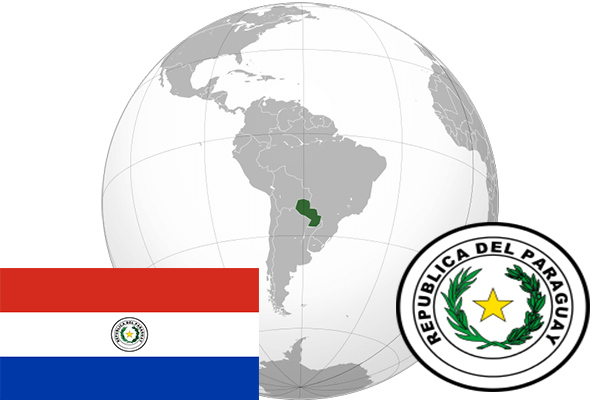

To`liq nomi: Paragvay Respublikasi
Region: Janubiy Amerika
Qonunchilik shakli: Respublika
Mustaqillik kuni: 14 may 1811 (Ispaniyadan)
Poytaxt: Asunson
Maydoni: 406,750 km²
Chegaradosh davlatlari: Argentina, Boliviya, Braziliya.
Aholisi: 7 003 000 (2015-yil)
Aholi zichligi: 17,2 /км²
Aholining o`rtacha yoshi: 73,04 yil (2015-yil)
Rasmiy tili: Ispan, Guarani tili
Dini: Xristian
Pul birligi: Paragvay guarani
Telefon prefiksi: +595
Internet domen: .py
Xalqaro tashkilotlarga a`zoligi: BMT
Dengiz va okeanlarga chiqishi: Yo’q
YIM: Butun: $30 mlrd.(2017-yil) Jon boshiga: $4,332
Yirik shaharlari: Asunson, Konsepson, San Pedro.